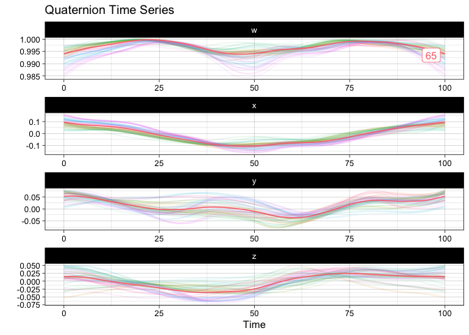
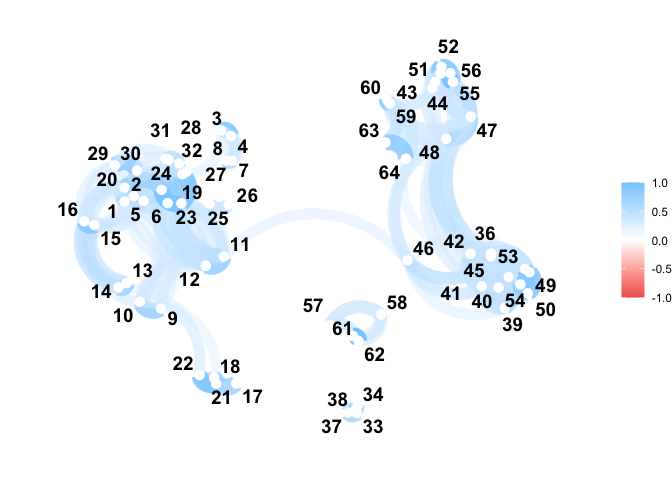
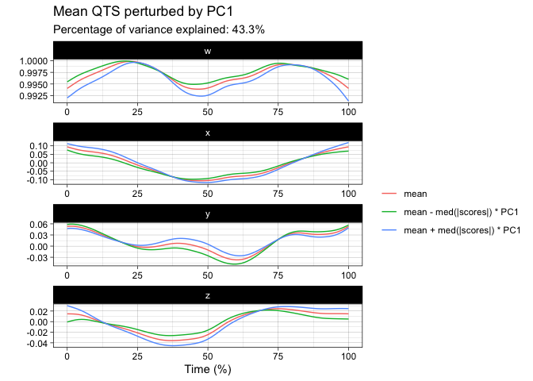
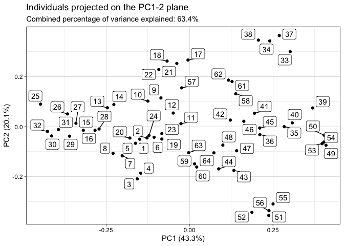
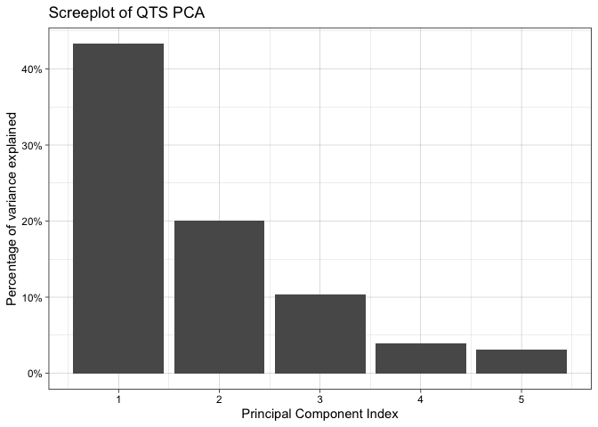
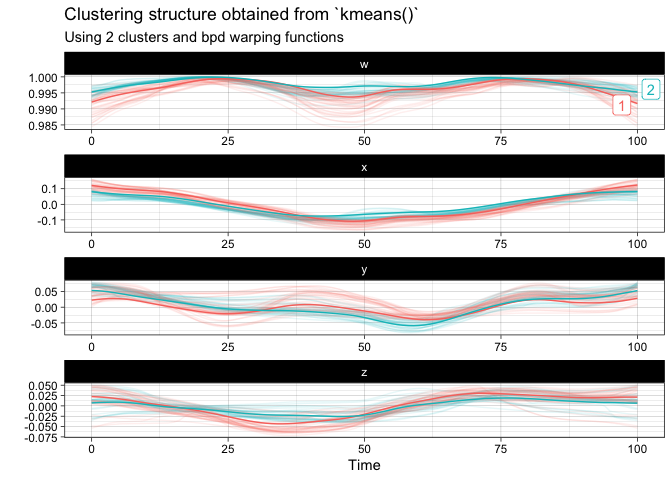

The goal of squat is to provide extensions of common statistical methods for the analysis of unit quaternion time series. Available statistical methods for QTS samples are currently:
- random generation according to the Gaussian functional model via
rnorm_qts(), -
scale(), -
mean(), -
median(), - distance matrix computation via
dist()including the possibility of separating amplitude and phase variability, - tangent principal component analysis via
prcomp(), - k-means with optional alignment via
kmeans().
Installation
You can install the official version from CRAN via:
install.packages("squat")or you can opt to install the development version from GitHub with:
# install.packages("devtools")
devtools::install_github("LMJL-Alea/squat")Example
First, let us visualize the sample of QTS from the vespa64 dataset included in the package. The package provides two ways of doing this: either via a static plot or via an animated one (which uses gganimate behind the scenes and will prompt you to install it in case you have not already).
Here is the static version:
plot(vespa64$igp)You can also use ggplot2::autoplot() instead of plot() to save the resulting ggplot object for further customization.
Here is the animated version:
p <- ggplot2::autoplot(vespa64$igp, with_animation = TRUE)
gganimate::anim_save("man/figures/README-animated-plot.gif", p)You can compute the geometric mean of the sample and append it to the sample for visualization:
m <- mean(vespa64$igp)
sample_and_mean <- append(vespa64$igp, m)
plot(sample_and_mean, highlighted = c(rep(FALSE, 64), TRUE))
You can compute the pairwise distance matrix (based on the DTW for now):
D <- dist(
vespa64$igp,
is_domain_interval = TRUE,
transformation = "srvf",
metric = "l2",
warping_class = "bpd"
)
C <- exp(-D / (sqrt(2) * sd(D)))
C <- (C - min(C)) / diff(range(C))
C <- C |>
as.matrix() |>
corrr::as_cordf()
corrr::network_plot(C)
#> Warning: ggrepel: 1 unlabeled data points (too many overlaps). Consider
#> increasing max.overlaps
You can perform tangent principal component analysis and visualize it:
tpca <- prcomp(vespa64$igp)
#> ℹ The maximum number of principal component is 63.
plot(tpca, what = "PC1")
#> The `original_space` boolean argument is not specified. Defaulting to TRUE.
plot(tpca, what = "scores")
#> The `plane` length-2 integer vector argument is not specified. Defaulting to
#> 1:2.
screeplot(tpca)
You can finally perform a k-means clustering and visualize it:
km <- kmeans(
vespa64$igp,
n_clusters = 2,
is_domain_interval = TRUE,
transformation = "srvf",
warping_class = "bpd"
)
plot(km)